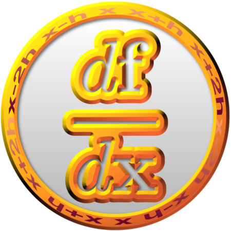

NumDiff

Brief description
NumDiff provides a modern Fortran interface for computing the Jacobian (derivative) matrix of m nonlinear functions which depend on n variables. The Jacobian matrix is required for various applications, including numerical optimization. It can also be used to test the accuracy of gradients computed by other means. The library also provides for computing the sparsity of this matrix, and returning the Jacobian in sparse or dense form.
Status


This is currently a work in progress. The goal is a comprehensive library that contains a full suite of computationally efficient implementations of algorithms for sparsity determination and numerical differentiation. This code is hosted on GitHub at: https://github.com/jacobwilliams/NumDiff
To Do
- [x] Computing the nonlinear sparsity pattern
- [x] Specified by the user
- [x] Assume all elements
true - [x] Three random points within variable bounds (have the option to specify separate bounds for this purpose)
- [x] Various order finite different gradient methods
- [x] 2-point (backward 1, forward 1)
- [x] 3-point (backward 2, central, forward 2)
- [x] 4-point (backward 3, backward 2, forward 2, forward 3)
- [x] 5-point (backward 4, backward 3, central, forward 3, forward 4)
- [x] 6-point (backward 5, backward 4, backward 3, forward 3, forward 4, forward 5)
- [x] 7-point (backward 6, backward 5, backward 4, central, forward 4, forward 5, forward 6)
- [x] 8-point (backward 7, backward 6, backward 5, backward 4, forward 4, forward 5, forward 6, forward 7)
- [x] 9-point (backward 8, backward 7, backward 6, backward 5, central, forward 5, forward 6, forward 7, forward 8)
- [x] 11-point (central)
- [x] 13-point (central)
- [x] 15-point (central)
- [x] 17-point (central)
- [x] Perturbations should respect variable bounds
- [x] Neville's process
- [x] Ability to use different methods for different columns
- [x] Jacobian partitioning to compute multiple columns at the same time
- [ ] Estimate the optimal perturbation step size
- [ ] Computing the linear sparsity pattern (constant elements of Jacobian)
- [ ] Add other gradient methods?
- [ ] Also compute Hessian matrix?
- [ ] OpenMP or Coarrays for parallelization
- [ ] Testing for computational efficiency
- [ ] General code cleanup
Building NumDiff
FPM
A Fortran Package Manager manifest file is included, so that the library and tests cases can be compiled with FPM. For example:
fpm build --profile release
fpm test --profile release
To use NumDiff within your FPM project, add the following to your fpm.toml file:
[dependencies]
NumDiff = { git="https://github.com/jacobwilliams/NumDiff.git" }
or, to use a specific version:
[dependencies]
NumDiff = { git="https://github.com/jacobwilliams/NumDiff.git", tag = "1.7.0" }
To generate the documentation using FORD, run:
ford ford.md
By default, the library is built with double precision (real64) real values. Explicitly specifying the real kind can be done using the following processor flags:
| Preprocessor flag | Kind | Number of bytes |
|---|---|---|
REAL32 |
real(kind=real32) |
4 |
REAL64 |
real(kind=real64) |
8 |
REAL128 |
real(kind=real128) |
16 |
For example, to build a single precision version of the library, use:
fpm build --profile release --flag "-DREAL32"
Note that the pyplot-fortran library is a dependency for one of the test cases. FPM will automatically download the right version.
Documentation
The latest API documentation can be found here. This was generated from the source code using FORD (note that the included build.sh script will also generate these files).
License
The NumDiff source code and related files and documentation are distributed under a permissive free software license (BSD-style).
References
- J. Oliver, "An algorithm for numerical differentiation of a function of one real variable", Journal of Computational and Applied Mathematics 6 (2) (1980) 145-160. Fortran 77 code from NIST
- Thomas F. Coleman, Burton S. Garbow, Jorge J. More, "Algorithm 618: FORTRAN subroutines for estimating sparse Jacobian Matrices", ACM Transactions on Mathematical Software (TOMS), Volume 10 Issue 3, Sept. 1984, Pages 346-347
- G. E. Mullges, F. Uhlig, "Numerical Algorithms with Fortran", Springer, 1996.